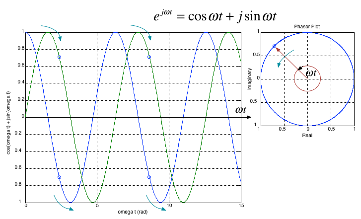

Worksheet 3#
To accompany Unit 3.2 Exponential Fourier Series#
Colophon#
This worksheet can be downloaded as a PDF file. We will step through this worksheet in class.
An annotatable copy of the notes for this presentation will be distributed before the second class meeting as Worksheet 3 in the Week 3: Classroom Activities section of the Canvas site. I will also distribute a copy to your personal Worksheets section of the OneNote Class Notebook so that you can add your own notes using OneNote.
You are expected to have at least watched the video presentation of exp_fseries) of the notes before coming to class. If you haven’t watch it afterwards!
After class, the lecture recording and the annotated version of the worksheets will be made available through Canvas.
Agenda#
Exponents and Euler’s Equation
The Exponential Fourier series
Symmetry in Exponential Fourier Series
Example
The Exponential Function \(e^{at}\)#
You should already be familiar with \(e^{at}\) because it appears in the solution of differential equations.
It is also a function that appears in the definition of the Laplace and Inverse Laplace Transform.
It pops up again and again in tables and properies of the Laplace Transform.
Case when a is real.#
When \(a\) is real the function \(e^{at}\) will take one of the two forms illustrated below:
clear all
cd ../matlab
format compact
You can regenerate this image generated with this Matlab script: expon.m.
expon
When \(a < 0\) the response is a decaying exponential (red line in plot)
When \(a = 0\) \(e^{at} = 1\) – essentially a model of DC
When \(a > 0\) the response is an unbounded increasing exponential (blue line in plot)
Case when a is imaginary#
This is the case that helps us simplify the computation of sinusoidal Fourier series.
It was Leonhard Euler who discovered the formula visualized above.
Some important values of \(\omega t\)#
These are useful when simplifying expressions that result from integrating functions that involve the imaginary exponential
Give the following:
\(e^{j\omega t}\) when \(\omega t = 0\)
\(e^{j\omega t}\) when \(\omega t = \pi/2\)
\(e^{j\omega t}\) when \(\omega t = \pi\)
\(e^{j\omega t}\) when \(\omega t = 3\pi/2\)
\(e^{j\omega t}\) when \(\omega t = 2\pi\)
Case where \(a\) is complex#
We shall not say much about this case except to note that the Laplace transform equation includes such a number. The variable \(s\) in the Laplace Transform
is a complex exponential.
The consequences of a complex \(s\) have particular significance in the development of system stability theories and in control systems analysis and design. Look out for them in EG-243.
Two Other Important Properties#
By use of trig. identities, it is relatively straight forward to show that:
and
We can use this result to convert the trigonometric Fourier series into an exponential Fourier series which has only one integral term to solve per harmonic.
The Exponential Fourier Series#
or more compactly
Important
The \(C_k\) coefficents, except for \(C_0\) are complex and appear in conjugate pairs so
Evaluation of the complex coefficients#
The coefficients are obtained from the following expressions*:
where \(\theta = \Omega_0 t\).
Alternatively
Symmetry in exponential Fourier series#
Since the coefficients of the exponential Fourier series are complex numbers, we can use symmetry to determine the form of the coefficients and thereby simplify the computation of series for wave forms that have symmetry.
Even Functions#
For even functions, all coefficients \(C_k\) are real.
Odd Functions#
For odd functions, all coefficients \(C_k\) are imaginary.
By a similar argument, all odd functions have no cosine terms so the \(a_k\) coefficients are 0. Therefore both \(C_{-k}\) and \(C_k\) are imaginary.
Half-wave symmetry#
If there is half-wave symmetry, \(C_k = 0\) for \(k\) even.
No symmetry#
If there is no symmetry the Exponential Fourier Series of \(f(t)\) is complex.
Relation of \(C_{-k}\) to \(C_{k}\)#
\(C_{-k} = C_{k}^*\) always
Example 1#
Compute the Exponential Fourier Series for the square wave shown below assuming that \(\omega = 1\)

Some questions for you#
Square wave is an [odd/even/neither] function?
DC component is [zero/non-zero]?
Square wave [has/does not have] half-wave symmetry?
Hence
\(C_0 = \)[?]
Coefficients \(C_k\) are [real/imaginary/complex]?
Subscripts \(k\) are [odd only/even only/both odd and even]?
What is the integral that needs to be solved for \(C_k\)?
Find the coefficients
Computing coefficients of Exponential Fourier Series in MATLAB#
Example 2#
Verify the result of Example 1 using MATLAB.
Solution#
Solution: See efs_sqw.m.
open efs_sqw
EFS_SQW#
Calculates the Exponential Fourier for a Square Wave with Odd Symmetry.
Set up parameters
syms t A;
tau = 1;
T0 = 2*pi; % w = 2*pi*f -> t = 2*pi/omega
k_vec = [-5:5];
Define f(t)
IMPORTANT: the signal definition must cover [0 to T0]
xt = A*(heaviside(t)-heaviside(t-T0/2)) - A*(heaviside(t-T0/2)-heaviside(t-T0));
Compute EFS
[X, w] = FourierSeries(xt, T0, k_vec)
Plot the numerical results from the MATLAB calculation.
Convert symbolic to numeric result
Xw = subs(X,A,1);
Plot
subplot(211)
stem(w,abs(Xw), 'o-');
title('Exponential Fourier Series for Square Waveform with Odd Symmetry')
xlabel('Hamonic frequencies: k\Omega_0 (rad/sec)');
ylabel('|c_k|');
subplot(212)
stem(w,angle(Xw), 'o-');
xlabel('Hamonic frequencies: k\Omega_0 (rad/sec)');
ylabel('\angle c_k [radians]');
Computing trig. Fourier series from exp. Fourier series#
Refer to the notes.
Summary#
Exponents and Euler’s Equation
The exponential Fourier series
Symmetry in Exponential Fourier Series
Example